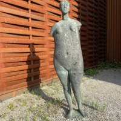
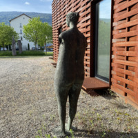
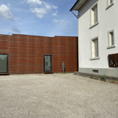
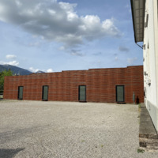

Heinz Schwarz, Femme debout (1954/57)
Objekt
Titel
Heinz Schwarz, Femme debout (1954/57)
Beschreibung
Wie findet man die Skulptur? – Grenchen (Südbahnhof) -> Kunsthaus Grenchen-> Skulpturengarten
Der Beginn der bildhauerischenTätigkeit von Heinz Schwarz geht auf die 1940er Jahre zurück. Nach seiner Lehre als Lithograph findet er 1943 seinen Weg von der Steinzeichnung zur Steinbildhauerei. "Femme debout" ist eine Bronzeskulptur aus dem weniger bekannten Frühwerk des Künstlers. Die figürliche Skulptur ist sehr frei in der Gestaltung eines weiblichen Körpers. Ihre Oberfläche ist gerillt, rau und zeigt eine natürliche Alterung des Materials. Von Heinz Schwarz gibt es im Skulpturenpark des Kunsthaus Grenchen eine zweite figürliche Plastik: "Laure" (1980) aus dem Spätwerk des Künstlers. Sie besteht aus Bronze und weist im Gegensatz zu "Femme debout" eine glatte Oberfläche auf.
Der Beginn der bildhauerischenTätigkeit von Heinz Schwarz geht auf die 1940er Jahre zurück. Nach seiner Lehre als Lithograph findet er 1943 seinen Weg von der Steinzeichnung zur Steinbildhauerei. "Femme debout" ist eine Bronzeskulptur aus dem weniger bekannten Frühwerk des Künstlers. Die figürliche Skulptur ist sehr frei in der Gestaltung eines weiblichen Körpers. Ihre Oberfläche ist gerillt, rau und zeigt eine natürliche Alterung des Materials. Von Heinz Schwarz gibt es im Skulpturenpark des Kunsthaus Grenchen eine zweite figürliche Plastik: "Laure" (1980) aus dem Spätwerk des Künstlers. Sie besteht aus Bronze und weist im Gegensatz zu "Femme debout" eine glatte Oberfläche auf.
Liste der Autoren
linlin
Urheber
Heinz Schwarz
with Role
Archivar:in
is described by
Femme debout
Format
Kunstwerk
Zeitlicher Geltungsbereich
1954 1. ESS-SPA
Thema
Skulptur

Grenchen-front.png
Grenchen-back.png
Grenchen-near.png
Grenchen-far.png Grenchen_Luan Linlin.MP4 Group_introduction.MP4This item was submitted on May 11, 2023 by [anonymous user] using the form “Beitrag hochladen” on the site “Öffentlichkeiten der Kunst”: https://www.publics-arts.ch/s/oedk
Hier klicken, um die gesammelten Daten zu sehen.